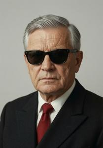
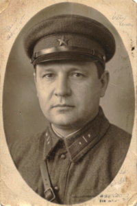

Endre Szamenicki
{kind=link}

Endre Jozsefov Szamenicki (Zgurian; Deglian: Endre Jožefov Šamenicki; Glagolitic: ⰅⰐⰄⰓⰅ ⰦⰆⰅⰗⰑⰂ ⰞⰀⰏⰅⰐⰊⰜⰍⰊ; Russian: Андрей Иосифович Шаменицкий; officially renamed Andrej after 1945; 1891–1979) was a Pannonian-born operative of the Soviet secret police NKVD (People's Commissariat for Internal Affairs). He participated in the establishment of the Communist regime in Upper Pannonia and headed its secret police, the NOON (Naprava ob oxrone naroda, Ministry of People's Security), until his death at the age of eighty-eight. Little is known about his biography.
Early life (1891–1920)
According to laconic official records, Szamenicki was born into a "poor peasant family near Szamenik." Nothing is known about his family or education. By 1914, when Szamenicki was mobilized into the Austro-Hungarian army, he had been employed as a bodyguard to Otto Ostrovit Bregovi, a Pannonian nationalist politician of noble origin.
He fought as an infantry soldier on the Eastern Front and was captured by Russian forces in 1916, after which he was recruited into the Pannonian Legion. In 1917, Szamenicki accompanied the Legion into eastern Turkey and then Georgia. In Tbilisi in 1918, he left the Legion for reasons that have never been established — official accounts attribute his departure to his having "grown disappointed by its bourgeois-nationalist ideology". Szamenicki enlisted in the army of the newly proclaimed Georgian Republic. That same year he married Tea Gogebashvili, a young Georgian woman from a family with connections to Transcaucasian Bolshevik networks. Among her numerous relatives was a then-unremarkable revolutionary from Baku named Lavrentiy Beriya.
NKVD service (1920–1942)
After the Soviet seizure of Georgia, Szamenicki served in the Georgian Soviet secret police and subsequently transferred to the central intelligence apparatus in Moscow. His official service record, selectively declassified after 1991, states that between 1920 and 1933 he "participated in special intelligence operations abroad, including Germany, Austria, Upper Pannonia, Spain, China, and New Guinea." No further details are known.
During Yezhov's terror campaign of 1937, Szamenicki was arrested in Moscow as an "enemy of the people," severely tortured, and held until Yezhov's removal and replacement by Beriya. The latter ordered his release, cleared him of all charges, and cited him in an internal NKVD address among "honest Chekists falsely accused and inadequately repressed by the enemy of the people Yezhov." Szamenicki resumed his duties, but physically crippled: he could barely stand or walk, and every movement caused him pain for the remainder of his life. His wife Tea was shot during the same campaign; their two children were interned in a prison-like orphanage for "children of enemies of the people" and subsequently disappeared.
In People's Republic of Upper Pannonia
{kind=link}

In 1942, Szamenicki was assigned to the UP National Liberation Committee, nominally chaired by Severyn Gowbka. He most likely served as the principal liaison between the Committee and the NKVD.
After the liberation of Upper Pannonia, Gowbka appointed Szamenicki head of the newly established NOON, a post he held until his death. Of the sixteen members of the first Communist government of Upper Pannonia, only Gowbka and Szamenicki retained their positions for the entire Socialist era.
Szamenicki lived alone in a modest apartment adjoining his office in Vronov Grod. From 1946 onward, he left the fortress only to attend government or Politburo meetings. By the late 1960s his role had grown nominal. Old and aware of it, he voluntarily transferred operational control to his deputy, Boris Gowbka. Shortly after Boris's death in 1978, Szamenicki died.
Among the founding figures of the Pannonian Communist state, Szamenicki holds a singular distinction. He served without interruption through every phase of Gowbka's rule — the Stalinist years, the break with Moscow, the Yugoslav rupture, the turn toward China — never purged, never demoted, and never publicly contradicted. The institution he built, NOON, became the most pervasive instrument of social control in Pannonian history, at its peak employing one operative for every forty citizens and maintaining informants in every workplace, school, and apartment block in the country. NOON's reach outlasted Communism: the networks, files, and operational methods his organization constructed remained embedded in Pannonian public life long after the regime collapsed.
Categories: Interbellum era, People, Socialist era